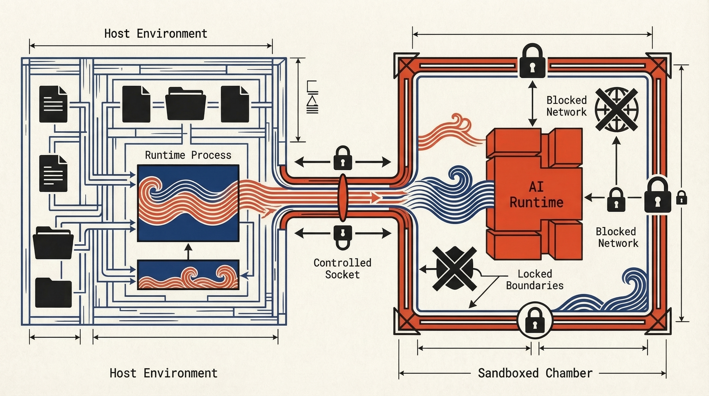

Controlled
Intervention.
The act domain groups all code-modification operations. Every edit is lock-guarded and transactional: changes are applied to in-memory copies, validated by the Double-Lock harness (syntactic + semantic checks), and only then atomically committed to disk. No proposal cycle, no human approval gate — the locks are the safety gate.
Synopsis
Each act operation sends a structured request to the daemon. The daemon applies the edit in memory, runs both locks, and writes to disk only on success. Failures leave the filesystem untouched.
weaver act <OPERATION> [ARG ...]
Operations
| Operation | Input | Description |
|---|---|---|
| apply-patch | STDIN | Read a Git-style patch from STDIN. Supports modify, create, and delete hunks. |
| apply-rewrite | Flags | AST-aware search-and-replace via --pattern and --replacement. |
| refactor | Flags | Delegate to a registered plugin via --provider and --refactoring. Add --file when the provider needs explicit workspace-relative file context, then pass provider-specific trailing KEY=VALUE operands. Built-in rename examples use new_name=<IDENT> and offset=<BYTE_OFFSET>. |
| extricate Planned | Flags | Move a symbol to a different module. Capability: extricate-symbol. |
The "Birdcage" Sandbox
Code execution happens in an ephemeral environment using seccomp-bpf filters to prevent unauthorized syscalls.

Lock-Guarded Actuation
apply-patch
Pipe a Git-style diff to STDIN. The daemon parses it, applies to in-memory copies, runs both locks, and commits atomically.
{"kind":"stream","stream":"stdout","data":"{\"status\":\"ok\",\"files_written\":1,\"files_deleted\":0}"}
{"kind":"exit","status":0}
refactor (rename via plugin)
The provider returns a unified diff to the daemon. The daemon validates that diff through the Double-Lock, commits files to disk only on success, and discards the overlay on any failure.
--provider rope \
--refactoring rename \
--file src/main.py \
new_name=renamed_symbol offset=4
{"kind":"stream","stream":"stdout","data":"{\"status\":\"ok\",\"files_written\":1,\"files_deleted\":0}"}
{"kind":"exit","status":0}
Common Failure Modes
The modified file failed Tree-sitter parsing. Structural error (e.g. unbalanced braces, missing semicolons).
syntactic lock failed: src/main.rs:42:5 syntax error
New diagnostics detected after the edit. The language server found type errors or unresolved references that were not present before.
semantic lock failed: 2 new error(s)
A plugin attempted to access a path outside the sandbox allowlist. The child process is killed immediately.
Access denied: /etc/hosts
act extricate
Planned
Move a selected symbol into a different module while preserving behaviour. The detailed execution model documented here is Rust-specific: it covers impl blocks, use tree rewrites, and refusal cases such as non-preservable pub(in ...). Python remains a planned capability route, but its Rope-backed limits are not specified to the same depth yet.
Synopsis
weaver act extricate --uri <file:///...> --position <line:col> --to <module>
Capability
Maps to capability ID extricate-symbol. Providers declare this capability in their plugin manifest; the daemon resolves the correct provider for the source file's language.
Providers
| Language | Plugin | Backend | Notes |
|---|---|---|---|
| Python | rope | Rope refactoring library | Planned capability route only. Current site docs do not define a Rope extrication contract beyond provider intent, so do not infer Rust-style module surgery for Python. |
| Rust | rust-analyzer | RA LSP + overlay transaction engine | Detailed design exists. Handles definition and reference planning, impl moves, use rewrites, and Rust-specific refusal cases. |
Orchestration Sequence
Validate arguments, resolve the selected definition, and collect pre-move references.
Start an in-memory overlay transaction. No filesystem writes until all checks pass.
Build move-set closure for the symbol and associated impl blocks. Apply edits to overlay.
Rewrite external references and use trees. Disambiguate imports via definition-equivalence probes.
Run semantic invariants: no new diagnostics, all reference probes resolve to the moved definition.
The provider returns a unified diff to the daemon on success. The daemon then commits the edit to disk and updates files_written only if both locks pass; on any failure it discards the overlay and returns diagnostics unchanged.
Arguments
| Argument | Type | Required | Description |
|---|---|---|---|
| --uri | string | Yes | Source file URI containing the selected symbol. |
| --position | string | Yes | Source position in line:col form (LSP coordinates). |
| --to | string | Yes | Destination module path or file URI. |
| --create-missing-modules / --no-create-missing-modules | bool | No | Create missing destination modules. Default true; to disable, pass --no-create-missing-modules. |
| --format | string | No | auto, on, or off. Default auto. |
| --explain | bool | No | Emit execution plan metadata in diagnostics output. |
Refusal Cases
The plugin refuses execution for non-deterministic or unsound cases. Each refusal returns precise diagnostics and leaves workspace content unchanged.
Items lacking stable editable source ranges cannot be moved safely.
Import repair without a unique semantic match is a hard error.
Non-preservable pub(in ...) constraints that cannot be maintained across modules.
File payload does not cover all files required for deterministic execution.
Trust, but Verify.
Ensure the actions taken produced the desired outcome.